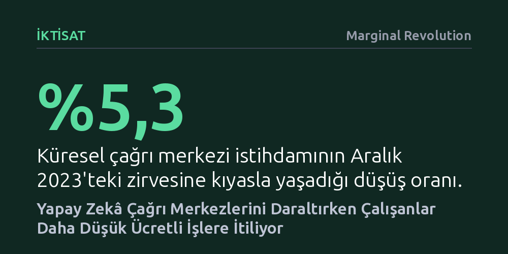

IKTISAT · Marginal Revolution · 2026-10-11
Yapay zekâ sohbet robotlarının yaygınlaşmasıyla küresel çağrı merkezi istihdamı zirve noktasının yüzde 5,3 altına gerileyerek sekiz çeyrektir kesintisiz küçülüyor. İşini kaybedenlerin yalnızca onda biri daha yüksek maaşlı teknoloji rollerine geçebilirken çoğunluğu daha düşük ücretli işlere kayıyor.
Yapay zekânın beyaz yakalıları işsiz bırakmayıp yeni ve daha iyi işlere yönlendireceği yönündeki iyimser beklentiyi, çağrı merkezlerinden çıkanların çoğunlukla daha kötü şartlardaki işlere sıkıştığını göstererek çürütüyor.

Küresel çağrı merkezi sektörü, on yıldan uzun süren kesintisiz büyüme döneminin ardından belirgin bir küçülme sürecine girdi. Açıklanan veriler, sektördeki toplam çalışan sayısının Aralık 2023'te ulaştığı zirve noktasının yüzde 5,3 altına gerilediğini ortaya koyuyor. Üstelik bu tablo anlık bir dalgalanma olmaktan uzak; küresel çağrı merkezi istihdamı tam sekiz çeyrektir yıllık bazda aralıksız düşüş kaydediyor.
Söz konusu geri çekilme dalgası ilk olarak yüksek gelirli ülkelerde baş gösterdi ve üretken yapay zekâ sohbet robotlarının hızlı yükselişiyle eşzamanlı olarak gerçekleşti. Müşteri temsilcilerinin yürüttüğü rutin destek ve yanıt süreçleri yapay zekâ araçlarına devredildikçe, çağrı merkezlerinin iş gücüne duyduğu ihtiyaç da hızla erimeye başladı.
Çağrı merkezlerindeki istihdam kaybı genel bir ekonomik yavaşlamanın sonucu değil, teknoloji kaynaklı özel bir ayrışmanın ürünü. ChatGPT öncesi dönemde orta gelirli ülkelerdeki çağrı merkezi çalışan sayısı, diğer ofis ve idari rollerle paralel bir seyir izliyor ve benzer bir ivmeyle büyüyordu.
Ancak üretken yapay zekânın hayatımıza girmesi bu ortak yönü tamamen kopardı. Yapay zekâ araçlarının yaygınlaşmasının ardından diğer beyaz yakalı pozisyonlar artışını sürdürürken, çağrı merkezleri ya duraklama dönemine girdi ya da doğrudan küçülmeye başladı. Böylece çağrı merkezi destek rolleri, kendi ülkelerindeki diğer beyaz yaka işlerin gerisinde kalarak yapay zekâ etkisinin ilk somut kurbanı oldu.
Teknolojik dönüşüme dair yaygın kabul, otomasyon sebebiyle işini kaybedenlerin daha nitelikli ve yüksek gelirli alanlara geçeceği yönündedir. Orta gelirli ülkelerde teknik destek, müşteri başarısı ya da yazılım ve veri gibi medyan ücretlerin yüzde 7 ila 13 daha yüksek olduğu roller gerçekten de büyümeyi sürdürüyor. Ne var ki çağrı merkezinden ayrılan çalışanların büyük kısmı için bu alanlara ulaşmak neredeyse imkânsız bir hedef olmaya devam ediyor.
İş değiştiren eski çağrı merkezi çalışanlarının yalnızca yüzde 10,8'i bu yüksek ücretli teknik ve veri rollerine geçiş yapabiliyor. Ayrılanların yarısı ise diğer müşteri hizmetleri, satış veya alt düzey ofis işlerine kayıyor; üstelik bu geçişler genellikle daha düşük bir ücret karşılığında gerçekleşiyor. Sonuç olarak yapay zekâ çalışanları daha nitelikli işlere yükselten bir basamak olmak yerine, onları daha düşük gelirli pozisyonlara iten bir baskı mekanizmasına dönüşüyor.